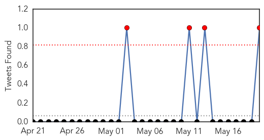
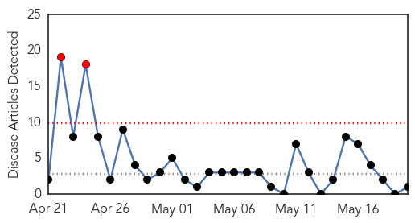
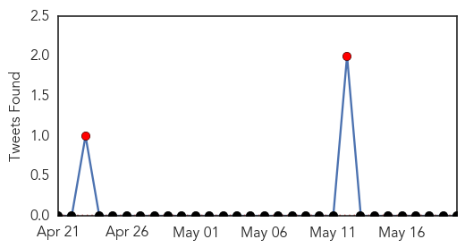

MERS
30-Day Web Trend
1 alerts, 0 warnings

30-Day Twitter Trend
0 alerts, 0 warnings

Article Locations

Article Confidences

Top Articles:
- 0.997
- Otago Daily Times Online News : Otago, South Island, New Zealand & International News
- 0.997
- Seoul confirms first MERS infection case
- 0.997
- South Korea Reports First MERS Virus Case
- 0.997
- South Korea reports first case of MERS virus; patient stable
- 0.996
- Abu Dhabi health authorities confirm second Mers case
- 0.995
- South Korea reports first case of MERS virus; patient stable
- 0.993
- South Korea reports first case of MERS virus; patient stable, news, Health News, AsiaOne YourHealth
- 0.993
- South Korea reports first case of Mers virus; patient stable, East Asia News & Top Stories
- 0.990
- Abu Dhabi lorry driver diagnosed with Mers
- 0.971
- South Korea has its first MERS case; UAE finds 2
Top Tweets:
- 0.879
- AFD Blog `UAE Health Authority: 2 More Coronavirus Cases' MERS-CoV http://t.co/hO5j1RTnBd
- 0.626
- Avian Flu Diary: South Korea Reports 1st Imported MERS-CoV Case http://t.co/0AGSQ2JRFH
Meningitis
30-Day Web Trend
2 alerts, 0 warnings

30-Day Twitter Trend
2 alerts, 0 warnings

Article Locations

Article Confidences

Top Articles:
Top Tweets:
-
No tweets found for May 20, 2015